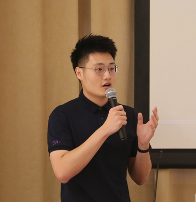

Peidong Liu[Google Scholar]Advanced Algorithm Engineer in DJI Automotive
Shenzhen, Guangdong, China. |
 |
Biography
I am currently a lead for the visual-language-action model (VLA) at the DJI Automotive Perception Group and especially focus on fine-tuning or prompting VLA to address the challenges posed by long-tailed scenarios. Before that, I was primarily responsible for the Bird's Eye View (BEV) lane detection and large-scale multimodal retrieval systems. If you are interested in an internship opportunity, please feel free to drop me an email.
I obtained my M.S. in Computer Science from Tsinghua University in 2022, as an outstanding graduate. I have been fortunate to closely work with Prof. Xiaodan Liang at Sun Yat-sen University, Dr. Hang Xu at Huawei Noah's Ark Lab, Dr. Litong Feng and Dr. Xinjiang Wang at SenseTime Research. I received my B.S. in Software Engineering from Sun Yat-sen University summa cum laude in 2019. My research interest lies in computer vision and visual-language model.
News
- (2024-01) I am awarded 2023 Annual Efficiency Vanguard Award at DJI Automotive for the outstanding contributions.
- (2022-07) Two of our works are accepted by ECCV2022.
- (2022-06) I am awarded both University-wise (Top 1%) and Department-wise (Top 5%) Outstanding Graduate at Tsinghua University.
- (2022-06) I am awarded Outstanding Master's Thesis Award at Tsinghua University (Top 5%).
- (2021-10) I am awarded National Scholarship for Postgraduate at Tsinghua University (Top 1%).
- (2021-07) Our work is accecpted by ACM MM2021 as an Oral paper.
- (2021-02) I am invited to give a talk about our ICLR2021 paper in QingYuan (青源 in Chinese) Seminar, organized by Beijing Academy of Artificial Intelligence (BAAI). Thanks for SenseTime's invitation. Please see more details here.
- (2021-01) Our paper is accecpted by ICLR2021. The first Autoloss work for object detection. The code is released here.
Publications
* denotes equal contribution.|
In Submission |
SimCC: a Simple Coordinate Classification Perspective for Human Pose Estimation [PDF] |
||
|
Yanjie Li, Sen Yang, Peidong Liu, Shu-Tao Xia European Conference on Computer Vision (ECCV), 2022 |
NeXT: Towards High Quality Neural Radiance Fields via Multi-Skip Transformer [PDF] |
||
|
Yunxiao Wang, Yanjie Li, Peidong Liu, Tao Dai, Shu-Tao Xia European Conference on Computer Vision (ECCV), 2022 |
Multi-task Ranking with User Behaviors for Text-Video Search [PDF] |
||
|
Peidong Liu, Dongliang Liao, Jinpeng Wang, Yangxin Wu, Gongfu Li, Shu-Tao Xia, Jin Xu International World Wide Web Conferences (WWW, CCF-A) Companion, 2022 |
 |
Loss Function Discovery for Object Detection via Convergence-Simulation Driven Search [PDF] [Talk] [Poster] [PPT] [Code] |
|
|
Peidong Liu*, Gengwei Zhang*, Bochao Wang, Hang Xu, Xiaodan Liang, Yong Jiang, Zhenguo Li International Conference on Learning Representations (ICLR), 2021. |
WeClick: Weakly-Supervised Video Semantic Segmentation with Click Annotations [PDF] |
||
|
Peidong Liu*, Zibin He*, Xiyu Yan*, Yong Jiang, Shu-Tao Xia, Feng Zheng, Maowei Hu ACM International Conference on Multimedia (ACM MM, CCF-A) Oral, 2021. |
Visual Privacy Protection via Mapping Distortion [PDF] [Code] |
||
|
Yiming Li*, Peidong Liu*, Yong Jiang, Shu-Tao Xia International Conference on Acoustics, Speech and Signal Processing (ICASSP), 2021 |
Deep Flow Collaborative Network for Online Visual Tracking [PDF] |
||
|
Peidong Liu, Xiyu Yan, Yong Jiang, Shu-Tao Xia International Conference on Acoustics, Speech and Signal Processing (ICASSP), 2020 |
LDA Meets Word2Vec: A Novel Model for Academic Abstract Clustering [PDF] |
||
|
Changzhou Li, Yao Lu, Junfeng Wu, Yongrui Zhang, Zhongzhou Xia, Tianchen Wang, Dantian Yu, Xurui Chen, Peidong Liu, Junyu Guo International World Wide Web Conferences (WWW, CCF-A) Companion, 2018 |
Selected Awards
- 2024.01 DJI Automotive 2023 Annual Efficiency Vanguard Award
- 2022.06 University-wise (Top 1%) and Department-wise (Top 5%) Outstanding Graduate at Tsinghua University
- 2022.06 Outstanding Master's Thesis Award at Tsinghua University (Top 5%)
- 2021.10 National Scholarship for Postgraduate (Top 1%)
- 2019.06 Outstanding Graduate of Sun Yat-sen University (Top 3%)
- 2018.10 Second Class Academic Scholarship of Sun Yat-sen University (Top 8%)
- 2017.10 Bronze Award in Intel Cup – Parallel Application Challenge (PAC) 2017, China (Top 6%)
- 2017.10 First Class Academic Scholarship of Sun Yat-sen University (Top 3%)
- 2017.01 Honorable Mention in Interdisciplinary Contest in Modeling
- 2016.10 First Class Academic Scholarship of Sun Yat-sen University (Top 3%)
Research Experience in both Academic and Industry
| 2022.07 - till now | Perception Group, DJI Automotive Advanced Computer Vision Algorithm Engineer (I achieved great performance as a result of my accomplishments) |
| 2019.09 - 2022.06 | Department of Computer Science and Technology, Tsinghua University Master Student Supervisor: Shu-Tao Xia |
| 2021.06 - 2022.05 | Search Application Department, WeChat Group, Tencent Computer Vision Algorithm Engineer Intern |
| 2020.04 - 2021.03 | Noah's Ark Lab, Huawei Research Intern Mentor: Xiaodan Liang, Hang Xu, Bochao Wang |
| 2019.07 - 2019.09 | Y-Tech AI Lab, Beijing Kuaishou Technology Ltd. AI Intern |
| 2018.11 - 2019.06 | Fundamental Technique Research Group, SenseTime Research Research Intern Mentor: Litong Feng (Senior Researcher, Ph.D.) |
| 2018.03 - 2018.05 | NUS-Tsinghua Center for Extreme Search(NExT++), NUS, Singapore Research Assistant Mentor: Zhaoyan Ming (Ph.D., Team Head, NExT++) |
| 2017.10 - 2018.02 | Smart Mobile Computing Lab, Advanced Networking and Computing Systems Institute, SYSU Research Assistant Mentor: Xu Chen (Professor, School of Data and Computer Science, SYSU) |
| 2017.07 - 2017.10 | Natural Language Processing Group, Guangdong Province Key Laboratory of Computational Science, SYSU Research Assistant Mentor: Yao Lu (Professor, School of Data and Computer Science, SYSU) |
Academic Service
Conference Reviewer for AAAI 2022, WWW 2022.Education
2019.09 - 2022.06, master student of Department of Computer Science and Technology at Tsinghua University
2015.09 - 2019.06, undergraduate student of School of Computer Science and Engineering at Sun Yat-sen University, rank 3/119
2018.01 - 2018.05, exchange student of School of Computing at National University of Singapore, research intern in NExT++ lab